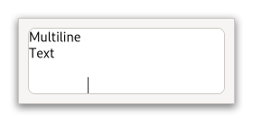

Class
GtkTextView
Description [src]
class Gtk.TextView : Gtk.Widget {
parent_instance: GtkWidget
}A widget that displays the contents of a GtkTextBuffer.

You may wish to begin by reading the conceptual overview, which gives an overview of all the objects and data types related to the text widget and how they work together.
CSS nodes
textview.view
├── border.top
├── border.left
├── text
│ ╰── [selection]
├── border.right
├── border.bottom
╰── [window.popup]
GtkTextView has a main css node with name textview and style class .view,
and subnodes for each of the border windows, and the main text area,
with names border and text, respectively. The border nodes each get
one of the style classes .left, .right, .top or .bottom.
A node representing the selection will appear below the text node.
If a context menu is opened, the window node will appear as a subnode of the main node.
Accessibility
GtkTextView uses the GTK_ACCESSIBLE_ROLE_TEXT_BOX role.
Instance methods
gtk_text_view_backward_display_line_start
Moves the given iter backward to the next display line start.
gtk_text_view_get_cursor_locations
Determine the positions of the strong and weak cursors if the
insertion point is at iter.
gtk_text_view_get_extra_menu
Gets the menu model that gets added to the context menu
or NULL if none has been set.
gtk_text_view_get_iter_at_position
Retrieves the iterator pointing to the character at buffer
coordinates x and y.
gtk_text_view_get_line_at_y
Gets the GtkTextIter at the start of the line containing
the coordinate y.
gtk_text_view_get_line_yrange
Gets the y coordinate of the top of the line containing iter,
and the height of the line.
gtk_text_view_get_ltr_context
Gets the PangoContext that is used for rendering LTR directed
text layouts.
since: 4.4
gtk_text_view_get_pixels_inside_wrap
Gets the default number of pixels to put between wrapped lines inside a paragraph.
gtk_text_view_get_rtl_context
Gets the PangoContext that is used for rendering RTL directed
text layouts.
since: 4.4
gtk_text_view_get_visible_rect
Fills visible_rect with the currently-visible
region of the buffer, in buffer coordinates.
gtk_text_view_im_context_filter_keypress
Allow the GtkTextView input method to internally handle key press
and release events.
gtk_text_view_move_mark_onscreen
Moves a mark within the buffer so that it’s located within the currently-visible text area.
gtk_text_view_move_visually
Move the iterator a given number of characters visually, treating it as the strong cursor position.
gtk_text_view_scroll_mark_onscreen
Scrolls text_view the minimum distance such that mark is contained
within the visible area of the widget.
gtk_text_view_scroll_to_iter
Scrolls text_view so that iter is on the screen in the position
indicated by xalign and yalign.
gtk_text_view_scroll_to_mark
Scrolls text_view so that mark is on the screen in the position
indicated by xalign and yalign.
gtk_text_view_set_extra_menu
Sets a menu model to add when constructing the context
menu for text_view.
gtk_text_view_set_pixels_above_lines
Sets the default number of blank pixels above paragraphs in text_view.
gtk_text_view_set_pixels_below_lines
Sets the default number of pixels of blank space
to put below paragraphs in text_view.
gtk_text_view_set_pixels_inside_wrap
Sets the default number of pixels of blank space to leave between display/wrapped lines within a paragraph.
gtk_text_view_window_to_buffer_coords
Converts coordinates on the window identified by win to buffer coordinates.
Methods inherited from GtkAccessible (10)
gtk_accessible_get_accessible_role
Retrieves the GtkAccessibleRole for the given GtkAccessible.
gtk_accessible_reset_property
Resets the accessible property to its default value.
gtk_accessible_reset_relation
Resets the accessible relation to its default value.
gtk_accessible_reset_state
Resets the accessible state to its default value.
gtk_accessible_update_property
Updates a list of accessible properties.
gtk_accessible_update_property_value
Updates an array of accessible properties.
gtk_accessible_update_relation
Updates a list of accessible relations.
gtk_accessible_update_relation_value
Updates an array of accessible relations.
gtk_accessible_update_state
Updates a list of accessible states. See the GtkAccessibleState
documentation for the value types of accessible states.
gtk_accessible_update_state_value
Updates an array of accessible states.
Methods inherited from GtkBuildable (1)
Methods inherited from GtkScrollable (9)
gtk_scrollable_get_border
Returns the size of a non-scrolling border around the outside of the scrollable.
gtk_scrollable_get_hadjustment
Retrieves the GtkAdjustment used for horizontal scrolling.
gtk_scrollable_get_hscroll_policy
Gets the horizontal GtkScrollablePolicy.
gtk_scrollable_get_vadjustment
Retrieves the GtkAdjustment used for vertical scrolling.
gtk_scrollable_get_vscroll_policy
Gets the vertical GtkScrollablePolicy.
gtk_scrollable_set_hadjustment
Sets the horizontal adjustment of the GtkScrollable.
gtk_scrollable_set_hscroll_policy
Sets the GtkScrollablePolicy.
gtk_scrollable_set_vadjustment
Sets the vertical adjustment of the GtkScrollable.
gtk_scrollable_set_vscroll_policy
Sets the GtkScrollablePolicy.
Properties
Gtk.TextView:input-hints
Additional hints (beyond GtkTextView:input-purpose)
that allow input methods to fine-tune their behaviour.
Properties inherited from GtkWidget (34)
Gtk.Widget:can-focus
Whether the widget or any of its descendents can accept the input focus.
Gtk.Widget:can-target
Whether the widget can receive pointer events.
Gtk.Widget:css-classes
A list of css classes applied to this widget.
Gtk.Widget:css-name
The name of this widget in the CSS tree.
Gtk.Widget:cursor
The cursor used by widget.
Gtk.Widget:focus-on-click
Whether the widget should grab focus when it is clicked with the mouse.
Gtk.Widget:focusable
Whether this widget itself will accept the input focus.
Gtk.Widget:halign
How to distribute horizontal space if widget gets extra space.
Gtk.Widget:has-default
Whether the widget is the default widget.
Gtk.Widget:has-focus
Whether the widget has the input focus.
Gtk.Widget:has-tooltip
Enables or disables the emission of the ::query-tooltip signal on widget.
Gtk.Widget:height-request
Override for height request of the widget.
Gtk.Widget:hexpand
Whether to expand horizontally.
Gtk.Widget:hexpand-set
Whether to use the hexpand property.
Gtk.Widget:layout-manager
The GtkLayoutManager instance to use to compute the preferred size
of the widget, and allocate its children.
Gtk.Widget:margin-bottom
Margin on bottom side of widget.
Gtk.Widget:margin-end
Margin on end of widget, horizontally.
Gtk.Widget:margin-start
Margin on start of widget, horizontally.
Gtk.Widget:margin-top
Margin on top side of widget.
Gtk.Widget:name
The name of the widget.
Gtk.Widget:opacity
The requested opacity of the widget.
Gtk.Widget:overflow
How content outside the widget’s content area is treated.
Gtk.Widget:parent
The parent widget of this widget.
Gtk.Widget:receives-default
Whether the widget will receive the default action when it is focused.
Gtk.Widget:root
The GtkRoot widget of the widget tree containing this widget.
Gtk.Widget:scale-factor
The scale factor of the widget.
Gtk.Widget:sensitive
Whether the widget responds to input.
Gtk.Widget:tooltip-markup
Sets the text of tooltip to be the given string, which is marked up with Pango markup.
Gtk.Widget:tooltip-text
Sets the text of tooltip to be the given string.
Gtk.Widget:valign
How to distribute vertical space if widget gets extra space.
Gtk.Widget:vexpand
Whether to expand vertically.
Gtk.Widget:vexpand-set
Whether to use the vexpand property.
Gtk.Widget:visible
Whether the widget is visible.
Gtk.Widget:width-request
Override for width request of the widget.
Properties inherited from GtkAccessible (1)
Properties inherited from GtkScrollable (4)
GtkScrollable:hadjustment
Horizontal GtkAdjustment of the scrollable widget.
GtkScrollable:hscroll-policy
Determines when horizontal scrolling should start.
GtkScrollable:vadjustment
Vertical GtkAdjustment of the scrollable widget.
GtkScrollable:vscroll-policy
Determines when vertical scrolling should start.
Signals
Gtk.TextView::insert-at-cursor
Gets emitted when the user initiates the insertion of a fixed string at the cursor.
Gtk.TextView::paste-clipboard
Gets emitted to paste the contents of the clipboard into the text view.
Signals inherited from GtkWidget (13)
GtkWidget::destroy
Signals that all holders of a reference to the widget should release the reference that they hold.
GtkWidget::direction-changed
Emitted when the text direction of a widget changes.
GtkWidget::hide
Emitted when widget is hidden.
GtkWidget::keynav-failed
Emitted if keyboard navigation fails.
GtkWidget::map
Emitted when widget is going to be mapped.
GtkWidget::mnemonic-activate
Emitted when a widget is activated via a mnemonic.
GtkWidget::move-focus
Emitted when the focus is moved.
GtkWidget::query-tooltip
Emitted when the widgets tooltip is about to be shown.
GtkWidget::realize
Emitted when widget is associated with a GdkSurface.
GtkWidget::show
Emitted when widget is shown.
GtkWidget::state-flags-changed
Emitted when the widget state changes.
GtkWidget::unmap
Emitted when widget is going to be unmapped.
GtkWidget::unrealize
Emitted when the GdkSurface associated with widget is destroyed.
Signals inherited from GObject (1)
GObject::notify
The notify signal is emitted on an object when one of its properties has its value set through g_object_set_property(), g_object_set(), et al.
Class structure
struct GtkTextViewClass {
GtkWidgetClass parent_class;
void (* move_cursor) (
GtkTextView* text_view,
GtkMovementStep step,
int count,
gboolean extend_selection
);
void (* set_anchor) (
GtkTextView* text_view
);
void (* insert_at_cursor) (
GtkTextView* text_view,
const char* str
);
void (* delete_from_cursor) (
GtkTextView* text_view,
GtkDeleteType type,
int count
);
void (* backspace) (
GtkTextView* text_view
);
void (* cut_clipboard) (
GtkTextView* text_view
);
void (* copy_clipboard) (
GtkTextView* text_view
);
void (* paste_clipboard) (
GtkTextView* text_view
);
void (* toggle_overwrite) (
GtkTextView* text_view
);
GtkTextBuffer* (* create_buffer) (
GtkTextView* text_view
);
void (* snapshot_layer) (
GtkTextView* text_view,
GtkTextViewLayer layer,
GtkSnapshot* snapshot
);
gboolean (* extend_selection) (
GtkTextView* text_view,
GtkTextExtendSelection granularity,
const GtkTextIter* location,
GtkTextIter* start,
GtkTextIter* end
);
void (* insert_emoji) (
GtkTextView* text_view
);
}Class members
parent_class: GtkWidgetClassThe object class structure needs to be the first.
move_cursor: void (* move_cursor) ( GtkTextView* text_view, GtkMovementStep step, int count, gboolean extend_selection )- No description available.
set_anchor: void (* set_anchor) ( GtkTextView* text_view )- No description available.
insert_at_cursor: void (* insert_at_cursor) ( GtkTextView* text_view, const char* str )- No description available.
delete_from_cursor: void (* delete_from_cursor) ( GtkTextView* text_view, GtkDeleteType type, int count )- No description available.
backspace: void (* backspace) ( GtkTextView* text_view )- No description available.
cut_clipboard: void (* cut_clipboard) ( GtkTextView* text_view )- No description available.
copy_clipboard: void (* copy_clipboard) ( GtkTextView* text_view )- No description available.
paste_clipboard: void (* paste_clipboard) ( GtkTextView* text_view )- No description available.
toggle_overwrite: void (* toggle_overwrite) ( GtkTextView* text_view )- No description available.
create_buffer: GtkTextBuffer* (* create_buffer) ( GtkTextView* text_view )- No description available.
snapshot_layer: void (* snapshot_layer) ( GtkTextView* text_view, GtkTextViewLayer layer, GtkSnapshot* snapshot )- No description available.
extend_selection: gboolean (* extend_selection) ( GtkTextView* text_view, GtkTextExtendSelection granularity, const GtkTextIter* location, GtkTextIter* start, GtkTextIter* end )- No description available.
insert_emoji: void (* insert_emoji) ( GtkTextView* text_view )- No description available.